| ||||||||
|
||||||||
|
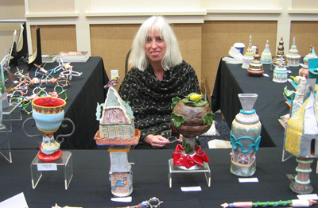
EXHIBITIONS AND VIRTUAL EXHIBITIONS All work is of ceramic sculpture unless noted. INDIVIDUAL 7/2/09 - 8/1/09 GALLERY 114, Portland, Oregon, Objects of the Sacred & Profane 3/8/06 - 3/11/06 STUDIO 21, Portland, Oregon In conjunction with NCECA (National Council on Education for the Ceramics Arts) Vajras and Spiceboxes 8/05, 10/05, 12/05, 02/06 -- images of ceramic Judaica, "Spice Box"endpage, Moment Magazine: Jewish politics, culture & religion for the 21st century 8/03 - 10/03 WASHINGTON STATE UNIVERSITY AT VANCOVER, LIBRARY Beyond Borders 9/01 - 11/01 OREGON JEWISH MUSEUM, Portland, Oregon Manifestations ofthe Divine 2/99 SACRED CIRCLE STUDIO, Portland, Oregon Stupas and Spiceboxes 5/96 - 6/96 INTERSTATE FIREHOUSE CULTURAL CENTER, Portland, Oregon From Pol Pot to Free Elections: photographs, poetry, memorabilia, ceramic sculpture relating to Cambodia 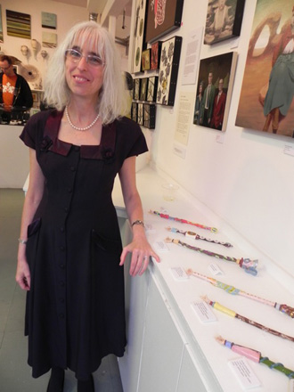 Guardino Gallery Opening FEATURED 3/31/11 - 4/24/11 GUARDINO GALLERY, Portland, Oregon, More Objects of the Sacred & Profane Exhibition with Anna Magruder, Katherine Treffinger and Maria Wickwire Scheduled 3/06 MARGHITTA FELDMAN GALLERY, Portland, Oregon Exhibition with Ronna Neuenschwander and Ingrid Hendrix. Gallery closed 6/30/05. 2/86 STARR GALLERY, Leventhal-Sidman Community Center, Newton, MA Work displayed with two other clay sculptors and a textile artist Willa has images in the Summer 2010 issue of Calyx: A Journal of Art and Literature by Women. 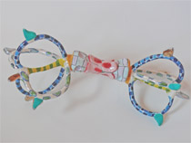 VAJRA – 10 1/2" X 5" X 4 1/2" Willa has been inspired by the varja (Sanskrit) or dorje (Tibetan) that signify the diamond and thunderbolt – symbols of the indestructible nature of truth. Dorje is a small scepter held in the right hand by Tibetan lamas during religious ceremonies. A few years ago I was able to witness the Dalai Lama employing the dorje during a ceremony in Dharamsala, India. 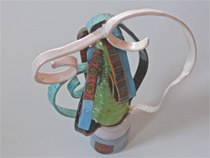 WHISK – 6 1/4" x 3 1/2" 9 1/2" The impetus for this sculpture is the whisk used in the Japanese tea ceremony GROUP 01/05 - 01/28/12 GALLERY 114, Portland, Oregon Exit/Winter 10/25/09 ORA: OREGON JEWISH ARTISTS, Mittleman Jewish Community Center, Portland, Oregon Scheduled 12/05 MARGHITTA FELDMAN GALLERY, Portland, Oregon Exhibit of Newly Represented Artists. Gallery closed 6/30/05. 12/04 - 4/05 OREGON JEWISH MUSEUM, Portland, Oregon Tzedakah Boxes 3/03 OREGON JEWISH MUSEUM, Portland, Oregon Exhibition and Auction 5/01 - 6/01 INTERSTATE FIREHOUSE CULTURAL CENTER, Portland, Oregon Show of I.F.C.C. Artists 4/01- 6/01 OREGON JEWISH MUSEUM, Portland, Oregon 2/00 Women's Judaica -- "Miriam's Cup" -- permanent collection 10/99 SANCTUARY FOR THE ARTS, Portland, Oregon The Scared Art of Dying 11/98 MOUNT ANGEL ABBEY LIBRARY ART GALLERY, Mount Angel, Oregon Images of Faith 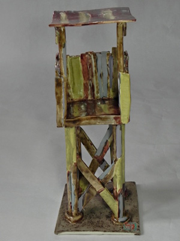 Watchtower in Winter 12/91 INTERFACE GALLERY, Newton, Massachusetts 11/91 - 12/91 MILLS GALLERY, Boston Center for the Arts, Boston, Massachusetts 9/91 NEWTON ARTS CENTER Artists in Social Work: A Juried Exhibition 11/90 - 2/91 MULTICULTURAL ARTS CENTER 11/90 - 12/90 MILLS GALLERY 12/88 PALLAS ATHENE, Brookline, Massachusetts 5/88 ZEFAT CRAFTS GALLERY, Zefat, Israel 5/87 MODESTINO GALLERY, Cambridge, Massachusetts 9/85 BOSTON VISUAL ARTISTS' UNION, Boston, Massachusetts 6/85 MAINSTREET GALLERY, Nantucket, Massachusetts 3/84 SOCIETY OF ARTS AND CRAFTS, Boston, Massachusetts 3/83 OAK RIDGE CONTEMPORARY CRAFT GALLERY, Oak Ridge, Tennessee 8/81 TEN ARROW GALLERY, Cambridge, Massachusetts 6/81 200 EAST GALLERY, Knoxville, Tennessee PROFESSIONAL ORGANIZATIONS & HONORS 2000 – 2005 Member of the Selection Committee for the Visual Chronicle of Portland, - a city-owned collection of works on paper relating to Portland 1998 - Roster artist (poetry) Oregon's Regional Arts & Culture Council's Neighborhood Arts Program 1996 - Roster artist (poetry) Oregon's Regional Arts & Culture Council's Arts-In- Education Program 1985 - Visual Arts and Literature, Artist-in-the-Schools Program, Massachusetts Institute for the Arts EDUCATION 9/81 - 6/ 83 UNIVERSITY OF TENNESSEE AT KNOXVILLE, Masters of Science in Social Work 9/75 - 12/76 BOSTON UNIVERSITY'S PROGRAM IN ARTISANRY, Specialization: Ceramics 6/73 B.A., EMPIRE STATE COLLEGE, New York, New York Majored in creative writing and fine art 6/71 - 12/71 NOVA SCOTIA COLLEGE OF ART & DESIGN, Halifax, NS |
Click on any photo to see a full-size version.
"OBJECTS OF THE SACRED AND PROFANE." Willa's work is inspired by living and working in Asia, particularly in Cambodia, Korea, Japan and Burma. In Cambodia she was employed by the United Nations from 1992 – 1993, during the first "free and fair elections" since the time of the French colonial period. The sculptures in this exhibit are reflections of the sacred-- Buddhist ritual, architecture of worship; and the profane-- street venders of Cambodia, especially the women who make and sell fruit smoothies throughout the country once ravished by the Khmer Rouge. The impetus for these sculptures include: the whisk used in the Japanese tea ceremony to make chartreuse powdered tea into a frothy foam; the vajra or dorje of Tibetan Buddhist tradition, considered a symbol of the indestructible nature of truth; the stupa or tope, a dome-like mound containing a shrine; and cases of fruits artfully displayed by street vendors. The sculpture is intimate, hand-built, low-fired in white and terra- cotta clay, glazed, lustered, china-painted and painted. Here are some images of the Opening at the 114 Gallery, in Portland, an exhibition from July 2, 2009 - August 1, 2009 of Ceramic Sculpture: Objects of the Sacred & Profane. 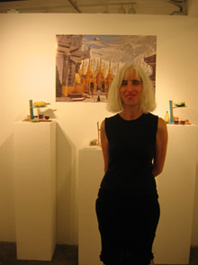 Art samples below (click to expand): 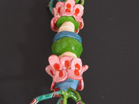 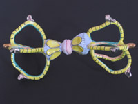 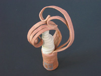 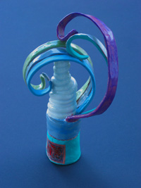 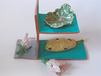 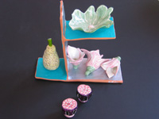 |